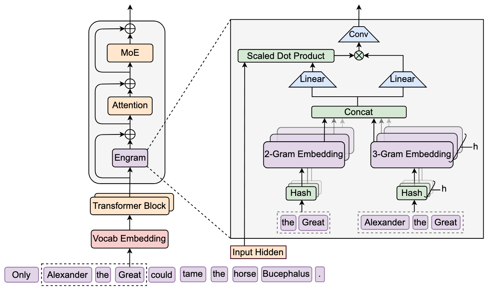
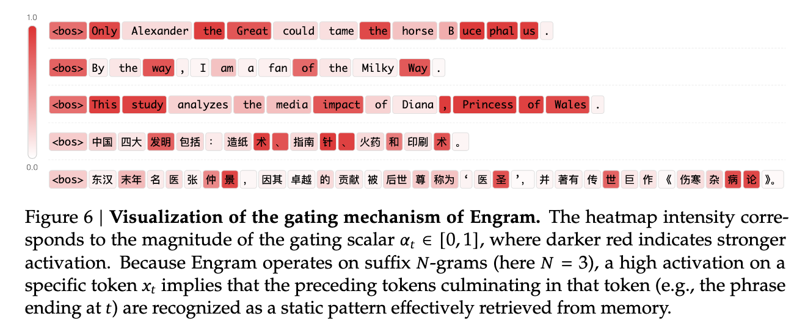
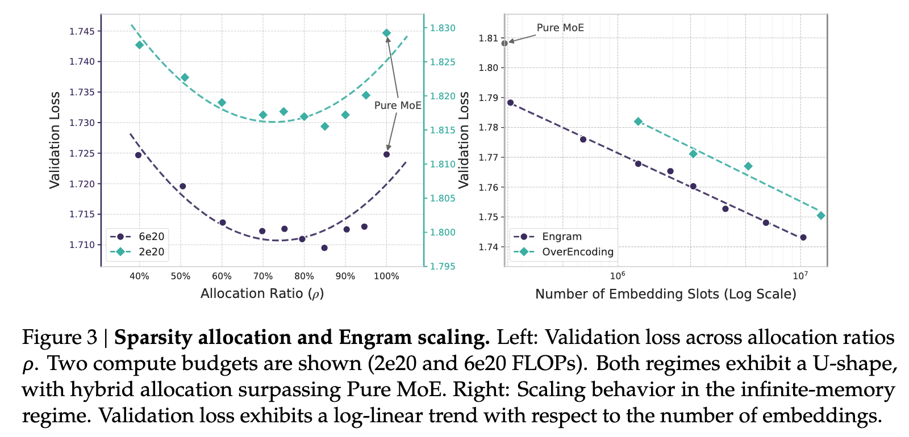

V4.1 静态查表参数规模
为深层推理腾出算力深度
Multi-Query NIAH 84.2→97.0
等总参 26.7B / 激活 3.8B 口径
面向高并发、CPU RAM 宽裕集群
端侧微型模型属 Non-Goal
“四大发明 / Alexander the Great”实为固定词组查找，无需逐层路由现算。
词组哈希只看明文词序，推理期可在计算隐藏态之前就提前确定并预取。
主机内存容量成本比显存低一个数量级，但受限 PCIe 传输带宽。
新增知识记忆不能净增单步算力，只能从既有稀疏专家预算中置换配额。
近 2,000 亿参数表必须原生保持低精度（FP8），并支持跨卡分片与主存卸载。
哈希碰撞噪声须受门控抑制，且 32 层 ViT 图像块不得混入 N-gram 滑窗。
骨干 40 层（20 编码 + 20 解码），公开 Pre-fill 激活约 8B / 生成约 16B。输入 ID 提前预取静态表。
模块分工：编码器层 1/14 承担静态记忆，后段聚焦复杂解码推理。
在编码前段就把 196.6B 静态实体一次性取出写回残差，避免拖到 L20–39 解码期消耗宝贵 KV 与带宽。
保持原生 FP8（183.1 GiB），命中后才反量化，守住显存红线。
全网由 L2, 8, 14, 20 四层充当全局压缩 KV 源，配合 w=128 CSA2 局部窗直接吸收相邻词序，不再额外加卷积延迟。
说明：L2, 8, 14 属编码器，L20 为解码器首层，共同服务共享压缩 KV。
遇到 32 层 ViT 图像块时注入 DEAD=-1 截断 N-gram 键生成，并在前向门控阶段用 token_mask 强制清零。
四流各自计算点积门控 alpha，彻底防止图像像素与哈希碰撞污染文本。

图 1 · 来源：deepseek-ai/Engram（Apache-2.0），见 arXiv:2601.07372。
同个 2-gram / 3-gram 同步过 h 组互异素数桶，把单个桶碰巧撞车的概率指数摊薄。
查出来的表征必须先跟 Input Hidden 点积过门：语境对得上才放行，对不上当场归零。
直觉：Hash 管 O(1) 找得到，Gate 管找错了不沾身，这才真正超越 OverEncoding。
129,280 → 99,092
2–4-gram + DEAD=-1
FP8 按行分片取回
token_mask 清零
压缩 -23.35% 规范词表，把大小写、全半角变形合并进同 ID，大幅减少冷门冗余桶。
严守约束 3：防止跨越图像像素拼出假 N-gram；V4.1 凡见负值键一律跳过不查。
严守约束 2：仅取回命中 FP8 行局部还原，经单矩阵 wkv 一次性切出 4 路 Key + 1 路 Value。
消化第 3 页撞桶代价：只有“发明”等实体末尾与隐藏态吻合，alpha 才飙至 0.9+。
token_mask 归零图像位后直接写入残差，后续紧邻的 w=128 CSA2 顺手完成局部组合。

图 2 · 来源：deepseek-ai/Engram Figure 6（Apache-2.0）。红色越深说明 alpha 越近 1.0。
“Alexander the Great”、“Diana, Princess of Wales”均在末词深红：读完结尾才凑齐键。
“造纸术、指南针、印刷术”及“张仲景 / 医圣 / 《伤寒杂病论》”末字呈现强门控。
反证验证：普通介词、连接词 alpha 维持在低值，不干扰骨干动态注意力。
# DeepSeek-V4.1-Flash-1017 (inference/model.py · hc_mult=4) class Engram(nn.Module): def forward(self, x, hash_ids, token_mask=None): kv = self.wkv(self.embed(hash_ids).flatten(-2)) key, val = kv.split([hc_mult * dim, dim], dim=-1) key = key.float().unflatten(-1, (hc_mult, dim)) w = self.q_weight.float() * self.k_weight.float() h = x.float() rstd = torch.rsqrt(h.square().mean(-1) + eps) * \ torch.rsqrt(key.square().mean(-1) + eps) dot = (h * w * key).sum(-1) * rstd * (dim ** -0.5) gate = torch.sigmoid(torch.copysign( dot.abs().clamp_min(1e-6).sqrt(), dot)) if token_mask is not None: gate = gate.masked_fill(~token_mask.unsqueeze(-1), 0) return (h + gate.unsqueeze(-1) * val.float().unsqueeze(-2))
embed() 按行分片取回 FP8 权重后，仅对命中行按块反量化，避免 196.6B 表以 BF16 常驻。
把论文中的多路分立线性投影压成一次矩阵乘，再沿最后一维切给 4 流 mHC 隐藏态。
省掉跨序列卷积同步与额外内核启动，局部上下文由前后层 w=128 CSA2 顺手吸收。
32 层 ViT 图像位置传 False，配合 engram.py 的 DEAD=-1 彻底锁死非文本查表入口。

图 3 · 来源：deepseek-ai/Engram（Apache-2.0）。左图 rho 为 MoE 占比，Engram 即 1 - rho。
27B 实验把 72 路由专家减至 55 个，匀出 5.7B 给 Engram，Loss 远低于纯 MoE。
论文测得全量静态表卸载至 CPU 内存并异步预取，端到端吞吐降幅不到 3%。
口径桥接：20%–25% 是稀疏内部配比；V4.1 占文本端 748.6B 总参为 26.3%。
MoE-27B 基线 · 84.2（总参 26.7B / 激活 3.8B）
Engram-27B · 97.0（净增 +12.8）
MoE-27B · BBH 50.9 / ARC-C 70.1
Engram-27B · BBH 55.9 (+5.0) / ARC-C 73.8 (+3.7)
MoE-27B · 57.4 / 57.9 / 37.8 / 28.3
Engram-27B · 60.4(+3.0) / 61.9(+4.0) / 40.8(+3.0) / 30.7(+2.4)
V4.1-Flash 原版 → 1017 快照 Terminal-Bench 4.0（RL 提升）
42.3（+11.1 · 模型卡注明同架构仅靠 RL 与输出提效）
N-gram 只看 2–4 个连续词元。同义长句改写与跨段隐知识，仍要骨干现算。
差距：尚未走向抽象语义记忆
层 [1, 14] 与配比依赖离线先验，难按多领域分布动态重分配容量。
差距：缺端到端动态预算学习
DeepSeek 未发布 V4.1 关停 Engram 的对照分，且约 8B/16B 激活仅见公开资料。
差距：生产 183.1 GiB 端侧仍受限
收录 V4.1-Flash-1017 20+20 CED、CSA2 与层 1/14 结构，并将静态表从 GPU 显存预算剥离。
探索随输入难度与领域自适应调度查表层位与 U 型容量分配，补齐百 B 以上直接消融。
把局部 2–4-gram 词表哈希升级为可预取的轻量语义键索引，把“静态记忆”扩及同义知识。